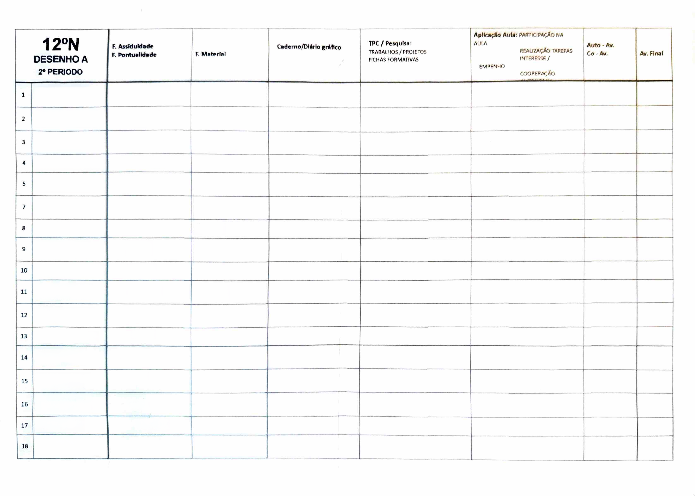
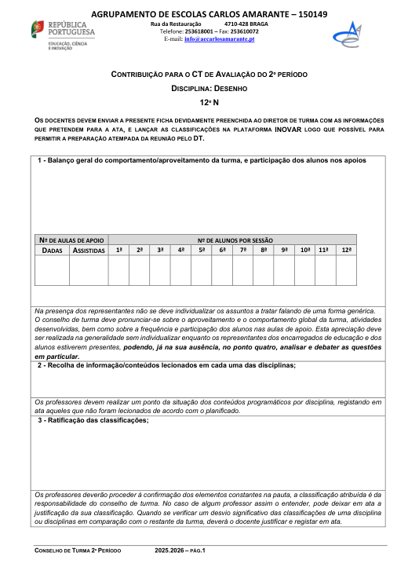

Arte e Cidadania
O desenho da figura humana como prática de atenção, cidadania e relação com o outro.
Índice
Reúnem-se aqui os instrumentos didácticos desenvolvidos durante o estágio, organizados pela estrutura do portefólio. Os documentos podem ser consultados diretamente nas páginas dos dois projetos.
Projetos em destaque
«Corpo Presente/Ausente» — o desenho da figura humana articulado com a Cidadania, ao longo do 2.º período, com a turma do 12.º ano de Desenho A. Planificações, fichas das aulas e resultados do questionário.
Ver aulas e materiais →Decoração natalícia inspirada na arte do vitral, em coadjuvação com a professora cooperante. Primeira experiência de planificação e lecionação do estágio. Planificação e apresentação completas.
Ver planificação e apresentação →01 · Introdução
O portefólio foi desenvolvido no âmbito do estágio do Mestrado em Ensino de Artes Visuais no 3.º Ciclo do Ensino Básico e no Ensino Secundário (MEAV) da Universidade do Minho, curso concebido pelo Instituto de Educação e pela Escola de Arquitetura, Arte e Design e lecionado nos campi de Gualtar (Braga) e Couros (Guimarães). O documento destina-se a descrever, justificar e classificar a execução do Projeto de Intervenção Pedagógica (PIP) e todos os seus procedimentos e decisões.
Encaro-o ainda como uma ferramenta de apoio à minha carreira futura, sobretudo nos primeiros anos, e como espaço de reflexão e organização de aprendizagens, numa postura de ponderação, questionamento e curiosidade alinhada com a abordagem da investigação-ação.
Depois de estudar Artes Visuais na Escola Secundária Carlos Amarante (a mesma onde realizo o estágio), licenciei-me em Design e Marketing de Moda na Universidade do Minho em 2017, trabalhei cerca de dois anos em design têxtil e concluí o curso supletivo de canto no Conservatório de Música Calouste Gulbenkian. Durante a pandemia dediquei-me à música, lançando em 2021 o meu disco autoral «Moldura», com concertos no Theatro Circo, no Fórum Braga e no Paço dos Duques de Bragança.
O interesse pelas Artes Visuais e pela História da Arte levou-me a reingressar na UM em 2022, onde descobri a vocação para o ensino e me candidatei ao MEAV no seu ano de inauguração. Mantenho-me ativa na música como trabalhadora independente e perspetivo iniciar a carreira na docência, que considero a área mais nobre.
Ligo a minha filosofia de ensino ao percurso académico, profissional e pessoal, defendendo o desenvolvimento incessante do indivíduo e a ideia de que o professor aprende durante toda a carreira. Identifico-me com um posicionamento curricular centrado no processo (Flores, 2000), com a figura do professor-investigador (Stenhouse) e com a aprendizagem significativa e construtivista, vendo o desenho como forma de compreender o mundo.
Convoco a profecia autorrealizada de Rosenthal e Jacobson (1968) para defender a confiança do aluno em si próprio, e mobilizo Cury, Read e Sharples («aprender a aprender») em defesa de um ensino capacitante. Foi à luz desta visão que desenvolvi o PIP, articulando o desenho da figura humana com a Cidadania e Desenvolvimento — em resposta a uma turma pouco participativa — em alinhamento com a ENEC e com a visão de Dewey em «Art as Experience» (1934).
02 · Enquadramento
O projeto desenvolveu-se na Escola Secundária Carlos Amarante, uma das mais antigas de Braga, no centro da cidade, integrada num agrupamento que vai do pré-escolar ao secundário regular e profissional e à educação de adultos, com grande diversidade cultural (484 alunos estrangeiros de 45 nacionalidades). O Projeto Educativo assume uma visão humanista, alinhada com os Direitos Humanos, e a escola desenvolve ainda o Projeto de Educação para a Saúde e o Plano Cultural de Escola, de perspetiva artística, intercultural e interdisciplinar.
A turma do 12.º ano de Desenho A era inicialmente constituída por 20 alunos, com idades entre os 16 e os 18 anos e predominância feminina (14 raparigas e 5 rapazes). Era uma turma respeitadora e tranquila, mas com perfis diversos — alguns alunos autónomos e organizados, outros com menor compromisso —, resultando num ritmo de trabalho variável.
A primeira necessidade identificada foi promover a participação e a comunicação oral em grupo, dado que a turma era pouco participativa e inibida na exposição de ideias — inibição associada a situações de bullying reportadas no passado dos alunos. A segunda prendeu-se com o desenvolvimento da atenção e de formas mais conscientes de presença. Em resposta, tornou-se pertinente um projeto centrado no corpo, na atenção ao outro, na empatia e na experiência artística coletiva, articulando o desenho com a cidadania e a reflexão sobre saúde mental.
Desenhou-se o projeto «Corpo Presente/Ausente», articulando o desenho da figura humana com a Cidadania e Desenvolvimento, em sintonia com os documentos orientadores (Aprendizagens Essenciais, ENEC, Perfil dos Alunos e Decretos-Lei n.º 54/2018 e 55/2018). A intencionalidade reside na promoção de uma visão humanista e empática da sociedade, explorando a figura humana — em especial as mãos, como símbolo de identidade, trabalho e ação humana — em escala aproximada do real e culminando numa instalação coletiva.
03 · Fundamentação teórica
O PIP decorreu ao longo do 2.º período (fevereiro e março de 2026) com a turma do 12.º ano de Desenho A. Estruturou-se segundo a metodologia de trabalho de projeto, inspirada em Dewey, que atribui função nuclear ao problema enquanto propulsor da atividade e assenta na cooperação entre saberes, contextos e experiências. A metodologia organizou-se em cinco etapas, precedidas de uma fase de reflexão prévia.
Exercício de consciência corporal e análise dialogada de obras (Carlos Bunga, Abramović, Mendieta, Helena Almeida e, sobretudo, Lourdes Castro) origina o problema gerador: o corpo como presença/ausência e o desenho como ato de cuidado.
Mentimeter — «Como caracterizas o estado mental da nossa sociedade numa só palavra?» — seguido da proposta de trabalho e da Tarefa n.º 1 (estudo estrutural da figura a partir de modelo voluntário).
Na Tarefa n.º 2, cada aluno fotografa e estuda uma pessoa do seu quotidiano; o trabalho individual culmina numa instalação coletiva, opção justificada pela avaliação justa e pela preparação para o exame.
Acompanhamento individualizado na Zona de Desenvolvimento Proximal (Vygotsky), com feedback formativo e modelação (Bandura); ensaio coletivo de montagem e ampliação dos desenhos por projeção.
Avaliação formativa e contínua, com justificação escrita, grelha de observação e rubrica; montagem da instalação no Mosteiro de Tibães e reapresentação na biblioteca escolar.
A intervenção decorreu no 2.º período, com a turma do 12.º ano de Desenho A, cujo horário incidia à quinta-feira e sexta-feira de manhã. O quadro seguinte sintetiza as fases, os dias e as principais atividades efetivamente realizadas.
| Fase | Dia | Atividades principais |
|---|---|---|
| IntroduçãoApresentação breve | 30 jan | Introdução/apresentação do projeto a desenvolver e preparação/contextualização da visita de estudo. |
| PesquisaCentro de Arquitetura do MAC/CCB, MAAT e Lx Factory | 5 fev | Visita de Estudo a Lisboa (1.º dia): Fundação Gulbenkian e instalação de Carlos Bunga (referência conceptual para o projeto). |
| PesquisaMUDE; Fundação Calouste Gulbenkian | 6 fev | Visita de Estudo a Lisboa (2.º dia): contacto com a arte contemporânea. |
| IntroduçãoSensibilização e arranque · 1.ª aula supervisionada | 12 fev | Exercício de consciência corporal («corpo presente»); análise dialogada de obras; auscultação de saberes prévios com Mentimeter; desenhos rápidos estruturais da figura (tarefa n.º 1). |
| PesquisaObservação e estudos | 19 fev | Conclusão da tarefa n.º 1; início da tarefa n.º 2: pesquisa e seleção de uma pessoa do quotidiano e estudos de observação da figura. |
| PesquisaObservação e estudos | 20 fev | Estudo das mãos, após apresentação teórica; trabalho a carvão. |
| Desenvolvimento2.ª aula supervisionada | 26 fev | Conceito de instalação («O que é uma instalação?»); ensaio coletivo de montagem; desenvolvimento do trabalho individual. |
| Desenvolvimento | 27 fev | Definição coletiva da escala das peças; desenho expressivo final da figura e das mãos (tarefa n.º 2). |
| FinalizaçãoOficina | 5 mar | Desenvolvimento do desenho final; digitalização e upload na Classroom; início da transferência para escala aproximada do real (papel de cenário). |
| FinalizaçãoOficina | 6 mar | Ponto de situação; esclarecimento da justificação escrita; divisão em dois grupos (sala: ampliação à escala / oficina: mãos a carvão). |
| Finalização | 12 mar | Conclusão da transferência para escala aproximada do real (repetição de alguns desenhos por deformação do projetor); mãos a carvão vegetal na oficina. |
| FinalizaçãoÚltima aula assistida | 13 mar | Reflexão coletiva (trabalho individual vs. peça coletiva); análise conjunta dos trabalhos; apresentação do protótipo; conclusão dos trabalhos e entrega da justificação escrita. |
| FinalizaçãoExposição | 19 mar | Montagem da instalação no Mosteiro de Tibães. |
| FinalizaçãoExposição | 21 mar | Inauguração da exposição «Artes na Escola», aberta à comunidade. |
| Avaliação | 26 mar | Análise dos diários gráficos e do trabalho realizado fora da aula. |
| Avaliação | 27 mar | Inquérito de autoavaliação/feedback; classificações finais com justificação individual. |
04 · Instrumentos de recolha de dados
Corresponde aos desenhos, concretizações gráficas, caderno/diário gráfico e portefólio produzidos. No PIP traduziu-se na avaliação de todos os elementos gráficos: esboços rápidos, estudos estruturais (Tarefa 1), estudos da figura e das mãos (Tarefa 2) e o desenho em escala aproximada do real (Tarefa 3).
Estímulo à partilha, ao diálogo bilateral e à discussão de ideias, particularmente pertinente numa turma cujas competências comunicativas exigiam estímulo constante. Concretizou-se no Mentimeter inicial e em momentos de discussão em grupo-turma, ocasiões também de auto e heteroavaliação contínua.
Acompanhamento diário do trabalho em aula, considerado o instrumento mais fidedigno por testemunhar o progresso quotidiano; utilizou-se uma Grelha de Avaliação Diária cedida pela professora cooperante. Reproduz-se abaixo a sua estrutura.

Grelha de Avaliação/Observação Diária utilizada em aula (cedida pela professora cooperante). Os nomes dos alunos e os registos foram removidos por privacidade; mantém-se apenas a estrutura de critérios.
Construiu-se uma rubrica integradora que articula numa classificação final os dados da análise de conteúdo e da observação. Organizada em critérios com descritores de desempenho numa escala de 200 pontos, abrangeu o conhecimento de tipos de expressão, a pesquisa e seleção de imagens, a estrutura, execução e criatividade (com maior peso), o domínio da linguagem plástica, a exploração dos meios atuantes, a autonomia e a autoavaliação.
07 · Desenvolvimento da prática
Para além dos dois projetos letivos, o estágio incluiu a observação da prática pedagógica e a participação num conjunto de atividades de escola.
Momentos centrais de planificação e coordenação (planificações anuais, critérios de avaliação, análise do sucesso escolar). Os Conselhos de Turma, no início do ano e no final de cada período, fazem o balanço, propostas de classificação e articulação com Cidadania e Educação Sexual. O acompanhamento de vários grupos-turma, do regular e do profissional, aprofundou a perceção das dinâmicas internas. Estes momentos são estruturados por uma ficha de apoio.

O contacto mostrou que a inclusão faz parte do funcionamento diário da escola. Conheceram-se as medidas do Decreto-Lei n.º 54/2018 (Universais, Seletivas e Adicionais), os documentos orientadores (RTP, PEI, PIT) e o papel da EMAEI, com o acompanhamento de um aluno com PEA (11.º ano) e de uma aluna com paralisia cerebral (12.º ano), constatando-se que uma inclusão verdadeira não deveria depender apenas da boa vontade do professor.
Aula sobre desenho geométrico introdutório, com demonstração direta. O aspeto mais marcante foi a gestão de uma turma numerosa: ao notar cansaço, a docente substituiu as mandalas a compasso por uma atividade mais lúdica, confirmando a importância de ter planos alternativos. A observação ajudou a compreender as exigências do 3.º ciclo.
Começa cedo (informação da prova em novembro; critérios e cotações do IAVE por volta de abril). A preparação prática assenta na construção de enunciados a partir das grelhas de exame, na adaptação de provas anteriores, na gestão do tempo, na justificação escrita e na análise de provas cotadas numa lógica formativa.
Acompanhamento da organização e realização de três visitas (Guimarães, Lisboa e Porto). Na Bienal de Ilustração de Guimarães os alunos selecionaram cinco obras para reflexão crítica; a visita a Lisboa (com Carlos Bunga na Gulbenkian) deu o mote ao PIP; a visita ao Porto (Serralves, Soares dos Reis e Palácio de Cristal) revelou maior abertura e participação.
Acompanhamento de uma turma do Curso Profissional a um concerto barroco comentado no Conservatório Calouste Gulbenkian, no âmbito do Plano Nacional das Artes. A metáfora da «mochila» enquanto bagagem cultural e a dimensão mediada do concerto aproximaram os alunos de uma linguagem artística distante do seu quotidiano.
Se o vídeo não carregar, vê-o diretamente no YouTube (o player não funciona ao abrir o ficheiro localmente; funciona quando o site está publicado).
Preparação e dinamização, com o colega estagiário Daniel Rosa, do workshop «Mundo Geométrico», que desafiava os alunos a construir edifícios e elementos orgânicos a partir de sólidos geométricos. A ausência de instruções diretivas favoreceu soluções originais e a aprendizagem pela ação e pelo erro (Piaget, 1973).
Receção e orientação dos alunos do 9.º ano em contacto com a oferta de ensino profissional, no âmbito da divulgação do curso de Técnico de Design de Interiores e Exteriores. O contacto com alunos em fase de decisão reforçou a importância da versatilidade do docente.
Ação de três horas dinamizada por Helena Mendes Ferreira no MUZEU – Pensamento e Arte Contemporânea dst. Abordou a articulação entre escola, museu, território e comunidade, e refletiu sobre o museu como dispositivo de pensamento crítico e cidadania, confirmando temas do PIP.
08 · Avaliação do projeto
A avaliação cruzou várias fontes: o questionário final, as classificações do 2.º período, as justificações escritas, a grelha de observação, fichas de autoavaliação e o feedback da comunidade nas duas exposições. Os resultados foram globalmente positivos, com a maioria nos níveis Bom e Muito Bom. Indícios concretos confirmaram a aquisição de competências (a prova de memória da figura humana e um trabalho posterior de banda desenhada sobre o «Memorial do Convento»). Registaram-se dificuldades — a reduzida participação espontânea, a heterogeneidade no envolvimento e a falta de assiduidade de alguns — mas o balanço foi positivo, confirmando a pertinência da articulação entre o desenho da figura humana e a cidadania.
No final do PIP, os 20 alunos responderam a um questionário com 39 questões sobre a importância do projeto, a metodologia, as aprendizagens, o trabalho coletivo e a articulação com a cidadania e a saúde mental.